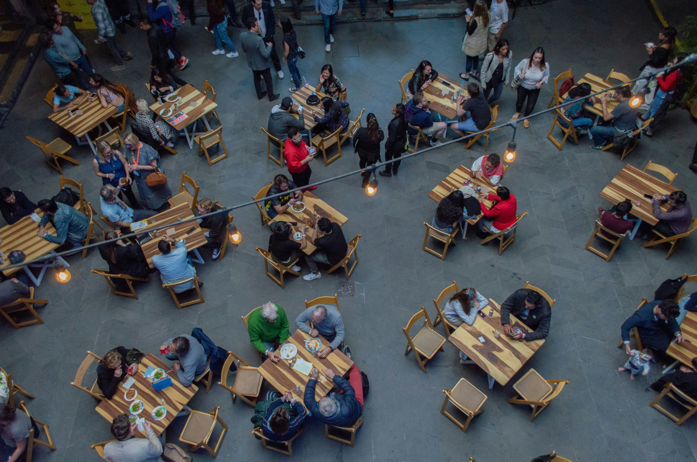

Your First is busy: new classes, new friend, and days on campus. it is easy to skip meals or spend your whole allowance on milk tea. Eating regular, simple meals helps you focus in class, and you do not need a big budget to do it
You have more options than you think. Here are the usual go-to spots: The school canteen for quick rice meals between classes • Carinderias outside the gate for cheap, filling ulam and rice ⚫ Your own baon from home, which is the cheapest choice of all Convenience stores for emergency snacks, not for every meal
A little planning on Sunday saves you from being broke by Thursday.
Always bring a refillable water bottle. Water stations on campus are free, and you will save a lot compared to buying bottled drinks every day

Photo by: Regina victoria